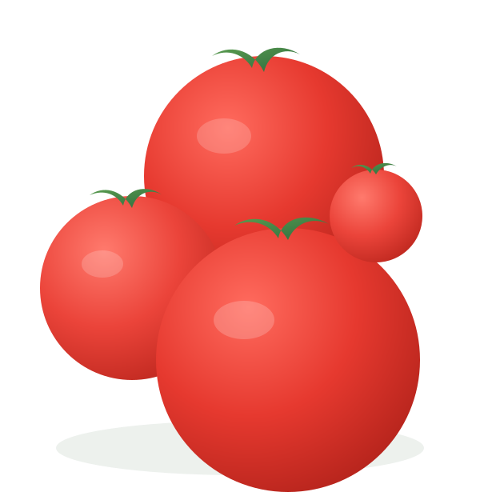
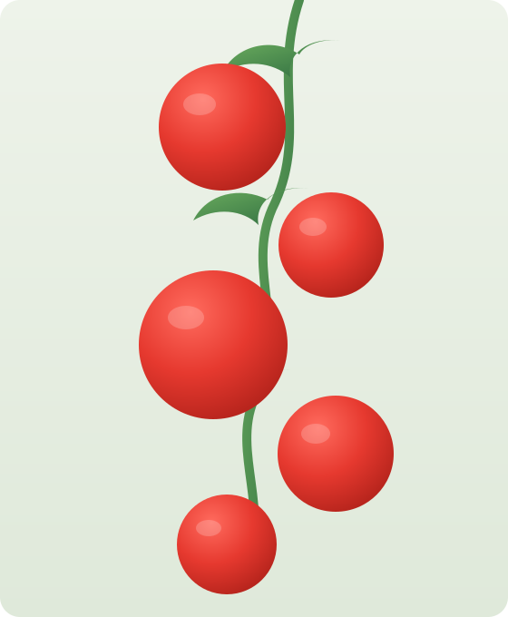
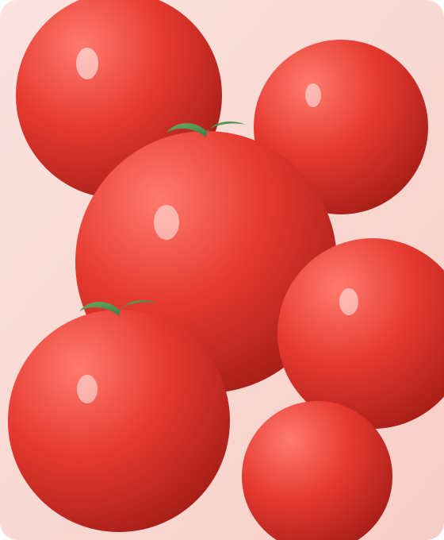

🍃 Fresh from farm to market
TOMEX connects farmers, buyers, transporters, and cold storage providers on one trusted platform — so fresh tomatoes reach the market before they spoil.


🍃 About Us
TOMEX is an online marketplace built to help reduce post-harvest tomato losses in Nigeria. We connect farmers, buyers, transport providers, and cold storage facilities through one easy-to-use platform.
Instead of losing fresh tomatoes due to poor storage, lack of buyers, or transport challenges, users can quickly find trusted partners, manage orders, and move produce safely from farm to market.
Our goal is to reduce food waste, improve farmers' income, and ensure fresh tomatoes reach consumers on time.
🍃 Why Choose Tomex
🍃 How it Works
Step 1
List your tomatoes or browse available products.
Step 2
Connect with trusted buyers, transport providers, or storage facilities.
Step 3
Confirm your order and book transport or storage if needed.
Step 4
Track delivery until the tomatoes arrive safely.
Step 5
Complete the transaction and receive payment.
To reduce tomato waste by making it easier for farmers, buyers, transport providers, and cold storage facilities to work together.
To become Nigeria's most trusted digital marketplace for fresh tomato trading and agricultural logistics.

🍃 Our Services
Buy and sell fresh tomatoes directly through trusted farmers and verified buyers across Nigeria.
Reserve nearby cold storage facilities to keep tomatoes fresh and reduce post-harvest losses.
Book reliable transport providers to move tomatoes safely from farms to buyers or cold storage facilities.
Connect with trusted farmers, buyers, transport providers, and storage managers.
Track your orders and deliveries in real time from pickup to successful delivery.
Chat and receive updates to coordinate deliveries, storage bookings, and tomato orders easily.